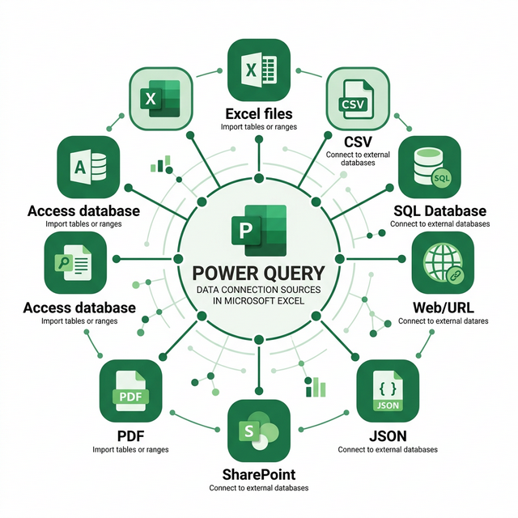

Kết nối và cập nhật dữ liệu trong Power Query
Học cách kết nối Power Query với đa dạng nguồn dữ liệu: File, Database, Web, và thiết lập cơ chế cập nhật (Refresh) tự động.
4.1 Tổng quan các nguồn dữ liệu
Power Query hỗ trợ kết nối với hàng chục nguồn dữ liệu khác nhau, được phân thành các nhóm chính:

From File
Excel, CSV, Text, XML, JSON, PDF, Folder
From Database
SQL Server, Access, Oracle, MySQL, PostgreSQL
From Web & Online
Web URL, SharePoint, OData, Dynamics 365
From Azure & Cloud
Azure SQL, Azure Blob, Azure HDInsight
4.2 Kết nối từ File
4.2.1 Từ File Excel (.xlsx, .xls)
Truy cập
Tab Data → Get Data → From File → From Excel Workbook
Chọn file và sheet
Duyệt và chọn file Excel → Navigator hiển thị danh sách Sheet và Table. Nhấp để xem trước (Preview). Chọn Transform Data hoặc Load.
4.2.2 Từ File CSV / Text
- Tab Data → Get Data → From File → From Text/CSV
- Chọn file CSV → Power Query tự động nhận diện:
- Delimiter: Dấu phân cách (phẩy, tab, semicolon...)
- Encoding: Mã hóa ký tự (UTF-8, Unicode, ANSI...)
- Data Type Detection: Tự động nhận diện kiểu dữ liệu
- Xem trước dữ liệu → chọn Transform Data hoặc Load
4.2.3 Từ Folder (Nhiều file cùng loại)
Đây là tính năng mạnh mẽ để gộp nhiều file trong một thư mục:
- Tab Data → Get Data → From File → From Folder
- Chọn đường dẫn thư mục chứa các file
- Power Query liệt kê tất cả file → chọn Combine & Transform Data
- Chọn file mẫu (sample file) để xác định cấu trúc
- Tất cả file sẽ được gộp tự động với cột Source.Name cho biết dữ liệu từ file nào
4.2.4 Từ File JSON
- Tab Data → Get Data → From File → From JSON
- Chọn file .json → Power Query phân tích cấu trúc
- Sử dụng các nút Expand (↔️) để mở rộng các cấp (nested objects/arrays)
- Nhấp vào List hoặc Record để drill-down vào dữ liệu lồng nhau
4.3 Kết nối từ Database
4.3.1 SQL Server
Kết nối
Tab Data → Get Data → From Database → From SQL Server Database
Nhập thông tin
Server name: tên_server hoặc server\instance. Database name (tùy chọn): tên database cụ thể. Có thể nhập SQL statement trực tiếp trong Advanced options.
Xác thực
Chọn phương thức xác thực: Windows (tài khoản Windows hiện tại) hoặc Database (nhập username/password SQL).
Chọn bảng
Navigator hiển thị danh sách tables và views → chọn bảng cần import → Transform Data.
4.3.2 Microsoft Access
- Tab Data → Get Data → From Database → From Microsoft Access Database
- Chọn file .accdb hoặc .mdb
- Navigator hiển thị Tables và Queries từ Access
- Chọn bảng cần import → Transform Data
4.4 Kết nối từ Web
Power Query có thể lấy dữ liệu bảng (table) từ trang web HTML:
- Tab Data → Get Data → From Other Sources → From Web
- Nhập URL đầy đủ của trang web
- Chọn chế độ xác thực: Anonymous (không cần đăng nhập) hoặc Basic/OAuth (cần thông tin đăng nhập)
- Power Query phân tích trang và liệt kê các bảng tìm được (Table 0, Table 1...)
- Xem trước và chọn bảng phù hợp → Transform Data
4.5 Cập nhật dữ liệu (Refresh)
Sau khi thiết lập query, bạn có thể cập nhật dữ liệu mới bất cứ lúc nào:
Refresh thủ công
| Phương pháp | Cách thực hiện | Phạm vi |
|---|---|---|
| Refresh All | Tab Data → Refresh All hoặc Ctrl + Alt + F5 | Tất cả queries trong workbook |
| Refresh từng query | Right-click vào bảng kết quả → Refresh | Chỉ query được chọn |
| Refresh từ panel | Queries & Connections panel → hover query → nhấn 🔄 | Chỉ query được chọn |
Refresh tự động
- Right-click vào bảng kết quả → Table → External Data Properties (hoặc Connection Properties)
- Cấu hình:
- ☑️ Refresh every X minutes: Tự động refresh theo chu kỳ (ví dụ: 30 phút)
- ☑️ Refresh data when opening the file: Tự động refresh khi mở file Excel
- ☑️ Enable background refresh: Refresh nền, không chặn thao tác người dùng
4.6 Quản lý Data Source Settings
Khi đường dẫn file thay đổi hoặc cần cập nhật thông tin kết nối:
- Tab Data → Get Data → Data Source Settings
- Danh sách tất cả nguồn dữ liệu đã kết nối sẽ hiển thị
- Chọn nguồn cần chỉnh sửa → Change Source (đổi đường dẫn) hoặc Edit Permissions (đổi quyền truy cập)
- Nhấn Clear Permissions nếu muốn xóa thông tin xác thực đã lưu
4.7 Kết nối từ PDF
Power Query có thể trích xuất bảng dữ liệu từ file PDF:
- Tab Data → Get Data → From File → From PDF
- Chọn file PDF
- Navigator hiển thị danh sách Tables và Pages tìm được
- Chọn bảng phù hợp → Transform Data
4.8 Kết nối từ XML
- Tab Data → Get Data → From File → From XML
- Chọn file .xml
- Power Query phân tích cấu trúc phân cấp (hierarchical)
- Sử dụng các nút Expand (↔️) để mở rộng nested elements
- Nhấp vào Table để drill-down vào child elements
4.9 Kết nối từ SharePoint
SharePoint List
- Tab Data → Get Data → From Online Services → From SharePoint List
- Nhập URL site SharePoint (ví dụ: https://company.sharepoint.com/sites/mysite)
- Xác thực bằng tài khoản Microsoft 365
- Navigator hiển thị tất cả lists → chọn list cần import
SharePoint Folder
- Tab Data → Get Data → From File → From SharePoint Folder
- Nhập URL site SharePoint
- Power Query liệt kê tất cả file trong document library
- Lọc và Combine files tương tự From Folder
OData Feed
- Tab Data → Get Data → From Other Sources → From OData Feed
- Nhập URL endpoint OData
- Xác thực nếu cần
- Navigator hiển thị các entities → chọn và Transform Data
4.10 Native SQL Query
Khi kết nối từ database, bạn có thể viết SQL trực tiếp thay vì chọn toàn bộ bảng:
Mở Advanced Options
Trong dialog kết nối SQL Server, mở rộng Advanced options
Nhập SQL Statement
Viết câu SQL trong ô SQL statement:
SELECT MaSP, TenSP, DonGia, SoLuong
FROM SanPham
WHERE DanhMuc = N'Máy tính'
ORDER BY DonGia DESC4.11 Query Folding Indicator
Trong Power Query Editor, bạn có thể kiểm tra xem bước nào được fold (đẩy về server xử lý):
| Icon Applied Steps | Ý nghĩa |
|---|---|
| ✅ Folded (có icon xanh) | Bước được thực thi trên server — hiệu suất cao |
| ⚠️ Not Folded (icon vàng) | Bước xử lý cục bộ — có thể chậm với dữ liệu lớn |
| ❓ Unknown | Không xác định — phụ thuộc nguồn dữ liệu |
Bật indicator: View → Query Folding Indicators (có trong Excel 365/Power BI mới nhất).
4.12 Fixed Width Files (File cố định cột)
Một số file text không có delimiter mà sử dụng độ rộng cố định cho mỗi cột:
- Data → Get Data → From File → From Text/CSV
- Trong dialog Preview, chọn Delimiter = Fixed Width
- Power Query tự detect vị trí cột, hoặc bạn chỉnh bằng cách kéo đường phân cách
- Transform Data để tinh chỉnh
// Import file fixed width thủ công
= Table.SplitColumn(
Source, "Column1",
Splitter.SplitTextByPositions({0, 10, 30, 45}),
{"MaNV", "HoTen", "PhongBan", "Luong"}
)4.13 Encoding khi import Text/CSV
Khi file CSV chứa ký tự đặc biệt (tiếng Việt, tiếng Nhật...), chọn đúng Encoding rất quan trọng:
| Encoding | Code Page | Khi nào dùng |
|---|---|---|
| UTF-8 | 65001 | Chuẩn quốc tế, hỗ trợ tiếng Việt ✅ |
| Windows-1252 | 1252 | File từ Windows cũ, không dấu |
| UTF-16 LE | 1200 | File Unicode từ Notepad Windows |
| ANSI | 1258 | File tiếng Việt cũ (VNI, TCVN) |
= Csv.Document(
File.Contents("D:\Data\DuLieu.csv"),
[Delimiter=",", Encoding=65001, QuoteStyle=QuoteStyle.Csv]
)4.14 Dynamic Named Range trong Excel
Khi nguồn dữ liệu trong Excel không phải Table, bạn có thể dùng Named Range hoặc truy cập sheet trực tiếp:
// Lấy dữ liệu từ Sheet cụ thể
= Excel.Workbook(File.Contents("D:\Data.xlsx")){[Item="Sheet1", Kind="Sheet"]}[Data]
// Lấy dữ liệu từ Named Range
= Excel.Workbook(File.Contents("D:\Data.xlsx")){[Item="DuLieuBanHang", Kind="DefinedName"]}[Data]
// Lấy dữ liệu từ Table
= Excel.CurrentWorkbook(){[Name="BangNhanVien"]}[Content]4.15 Web Scraping nâng cao
Power Query hỗ trợ nhiều cách lấy dữ liệu từ web:
Web.Page vs Web.BrowserContents
| Hàm | Khác biệt | Khi nào dùng |
|---|---|---|
| Web.Page | Lấy HTML tĩnh, parse thành bảng tự động | Trang web đơn giản có bảng HTML |
| Web.BrowserContents | Render JavaScript trước khi lấy HTML | Trang web động (React, Angular, SPA) |
| Web.Contents | Lấy raw data (JSON, XML, text) | REST API, file download |
// Lấy bảng HTML từ trang web
let
Source = Web.Page(Web.Contents("https://example.com/data")),
// Chọn bảng thứ 2 trên trang
Data = Source{1}[Data]
in
Data
// Lấy HTML render JavaScript
let
Html = Web.BrowserContents("https://example.com/spa-page"),
Source = Web.Page(Html),
Data = Source{0}[Data]
in
Data4.16 ODBC & OLEDB Connections
Kết nối với hệ thống cũ hoặc database đặc biệt qua ODBC/OLEDB:
- Data → Get Data → From Other Sources → From ODBC (hoặc OLEDB)
- Chọn DSN (Data Source Name) đã cấu hình, hoặc nhập Connection String
- Xác thực → Navigator → chọn bảng
// Kết nối ODBC với Connection String
= Odbc.DataSource(
"Driver={MySQL ODBC 8.0};Server=localhost;Database=mydb;",
[HierarchicalNavigation=true]
)
// Kết nối OLEDB (Access, Oracle...)
= OleDb.DataSource(
"Provider=Microsoft.ACE.OLEDB.12.0;Data Source=D:\Data.accdb;"
)4.11 Load Options (Tùy chọn tải dữ liệu)
Khi Close & Load, bạn có 4 lựa chọn về cách tải dữ liệu:
| Option | Mô tả | Khi nào dùng |
|---|---|---|
| Table | Tải vào worksheet dạng Table | Xem/chỉnh sửa dữ liệu trực tiếp |
| PivotTable | Tải trực tiếp vào PivotTable | Phân tích tổng hợp ngay |
| PivotChart | Tải vào PivotChart | Trực quan hóa dữ liệu |
| Connection Only | Chỉ tạo kết nối, KHÔNG tải vào sheet | Staging queries, query trung gian |
Cách chọn: Home → Close & Load → Close & Load To...
4.12 Staging Queries (Query trung gian)
Trong thiết kế ETL chuyên nghiệp, bạn tạo Staging Queries (Connection Only) làm nguồn cho các query khác:
// stg_DonHang (Connection Only — không tải vào sheet)
let Source = Csv.Document(File.Contents(pFolder & "DonHang.csv"),
[Delimiter=",", Encoding=65001]),
Headers = Table.PromoteHeaders(Source),
Typed = Table.TransformColumnTypes(Headers, {
{"NgayDat", type date}, {"SoLuong", Int64.Type}
})
in Typed
// rpt_DoanhThu (Load to Table — dùng stg_DonHang)
let Source = stg_DonHang,
Grouped = Table.Group(Source, {"ThangDat"},
{{"TongDoanhThu", each List.Sum([SoLuong]), type number}})
in Groupedstg_ để phân biệt.
Bài tập 4.1: Kết nối từ CSV
Mục tiêu: Thực hành import file CSV vào Power Query
- Tạo file SanPham.csv bằng Notepad với nội dung:
MaSP,TenSP,DonGia,SoLuong,DanhMuc SP001,Laptop Dell,15000000,50,Máy tính SP002,Chuột Logitech,350000,200,Phụ kiện SP003,Bàn phím Corsair,1200000,100,Phụ kiện SP004,Màn hình Samsung,5500000,75,Màn hình SP005,Tai nghe Sony,2800000,150,Phụ kiện - Lưu file với encoding UTF-8
- Mở Excel → Data → Get Data → From File → From Text/CSV
- Chọn file → kiểm tra Delimiter = Comma, Encoding = UTF-8
- Transform Data → kiểm tra dữ liệu trong Power Query Editor
- Đổi kiểu dữ liệu: DonGia và SoLuong → Whole Number
- Close & Load
Bài tập 4.2: Kết nối từ nhiều file trong folder
Mục tiêu: Thực hành Combine Files from Folder
- Tạo thư mục DoanhThu trên Desktop
- Tạo 3 file Excel trong thư mục, mỗi file có cùng cấu trúc:
- DoanhThu_T1.xlsx: Cột MaCH, TenCH, DoanhThu (5 dòng)
- DoanhThu_T2.xlsx: Cùng cấu trúc (5 dòng khác)
- DoanhThu_T3.xlsx: Cùng cấu trúc (5 dòng khác)
- Mở Excel mới → Data → Get Data → From File → From Folder
- Chọn thư mục DoanhThu → nhấn Combine & Transform Data
- Quan sát cột Source.Name cho biết dữ liệu từ file nào
- Close & Load → kiểm tra dữ liệu 15 dòng (5 × 3 file)
- Thử thêm file thứ 4: Tạo DoanhThu_T4.xlsx → đặt vào thư mục → Refresh All → dữ liệu tự động cập nhật!
Bài tập 4.3: Thiết lập Auto Refresh
Mục tiêu: Cấu hình tự động cập nhật dữ liệu
- Sử dụng query từ bài tập 4.1 hoặc 4.2
- Right-click vào bảng kết quả trong Excel
- Chọn Table → External Data Properties
- Đánh dấu ☑️ Refresh data when opening the file
- Đánh dấu ☑️ Refresh every → nhập 5 minutes
- Nhấn OK → đóng và mở lại file → quan sát dữ liệu tự động refresh